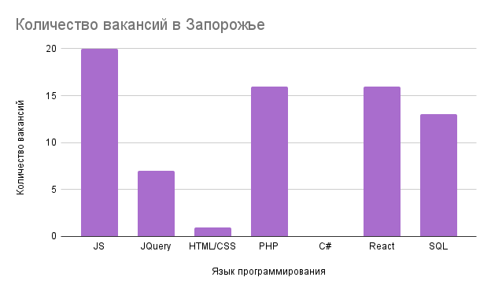

Веб-разработчик
Веб-разработчик-это специалист в области компьютерных технологий, который разрабатывает, тестирует, исправляет и совершенствует сайты, веб-сервисы, онлайн-приложения.Именно благодаря им мы можем комфортно пользоватся онлайн сервисам.
История специальности

История профессии веб-разработчика не такая уж и старая и берет свое начало в 90-ч годах прошлого столетия.Тогда интернет не был таким распространенным - требовался нрафический интерфес.В 1989 году Тим Бернерс-Ли изложил свою концепцию компьютерной платформы, что призвело к появлению в 1990 году языка гипертекстовой разметки - HTML.
Первые сайты не пользовались популярностью, поэтому веб-разработчики не был востребованы.Однако интернет, со временем, стал появляться в каждом доме.Именно в тот момент веб-разработчики стали быть востребованными.Для того чтобы сайты стали более презентабельными необходимо было усовершенствовать HTML,техники и технологии создания сайтов.
Сейчас веб-разработчик это одна с самый востребованных профессий в мире.Это связано с несколькими причинами.Во-первых, сегодня каждый второй имеет доступ в интернет и поэтому очень важно удовлетворить каждого.Во-вторых, интеренет-индустрия находится на пике своей популярности и пока нет ей замены.А в-третих, опытных веб-разработчиков очень мало и поэтому в основном они находятся в крупных корпорациях.
Направления в веб-разработке
-
В области веб-разработки существует три направления:
- Backend-разработчик — специалист, который работает с внутренними частями сайта: пишет код на различных языках, отвечает за бесперебойную работу сайта, организацию технических процессов и базу данных. Разработчик по бек-энду использует следующий инструментарий: разные языки программирования (PHP, Perl, Java, Python, Ruby), фреймворки (Kohana, Codeigniter, Yii), а также MySQL для сбережения данных.
- Frontend-разработчик — специалист, который работает над визуальной стороной сайта. Он переводит дизайн-проект в код, чтобы внешняя сторона сайта корректно функционировала и везде отображались правильно картинки. Его основные инструменты – CSS, HTML, JavaScript. Этот перечень дополняется еще целым перечнем программ, предназначенных для улучшения работы сайта: Bootstrap, jQuery, AngularJS, LESS, Sass/SCSS и др.
- Fullstack-разработчик — профессионал, который умеет выполнять задачи backend и frontend-разработчика. Таких мастеров достаточно мало, потому что очень тяжело освоить весь спектр знаний.
Навыки и Умения frontend-разработчика
-
soft skills
- Креативность
- Умение убеждать
- Умение работать в команде(collaboration)
- Адаптируемость
- Тайм-менеджмент
-
hard skills
- Работа с техникой
- Hard skills связаны с конкретной профессией
- Hard skills приобретаются по время учебы
- Уровень владения определяется экзаменами, тестированием
- Hard skills задейсвуют левое полушарие мозга
Популярные языки и технологии для frontend-разработки
На сегодня существуют множество языков программирования и их производных, однако есть языки которые более востребованы за другие
- HTML - аббревиатура языка разметки гипертекста – это язык программирования для создания электронных документов, называемых страницами, размещаемыми в Интернете. Каждая страница имеет несколько подключений к гиперссылкам или ссылкам на другие страницы.
- CSS - это язык программирования, используемый для описания того, как документы должны выглядеть с точки зрения макета и стиля. Под документом обычно понимается структура текстового файла, использующая язык разметки, такой как широко распространенный HTML и другие, например XML или SVG.
- React - это язык программирования, разработанный Facebook для создания быстрых и передовых пользовательских веб-интерфейсов. В настоящее время это одна из наиболее широко используемых библиотек JavaScript для создания веб-интерфейсов. Язык программирования React подходит для создания визуальных пользовательских интерфейсов и визуализации данных для браузеров.
- JavaScript - это популярный язык программирования, позволяющий пользователям реализовывать сложные функции на веб-страницах.Он может быть задействован в любой момент, когда страница выполняет динамическое действие, например, показывает периодическое обновление контента, анимированную двухмерную и трехмерную графику, интерактивные карты, видеовставки и многое другое.
- PHP - это универсальный язык программирования, который прост в использовании. Он отлично работает с большим количеством баз данных и операционных систем. Современные фреймворки, массивная база кода и активное сообщество PHP- все эти факторы обеспечивают непрерывную эволюцию PHP.
Плюсы и минусы професии

-
Преимущества
- 1. Незаменимые профи.
- 2. Высокий уровень жизни.
- 3. Плацдарм для развития.
- 4. Профессия будущего.
- 5. Возможность стать специалистом в молодом возрасте.
-
Недостатки
- 1. Сидячая работа
- 2. Постоянная учеба
Сколько получают веб-разработчики?
-
Indeed, Payscale, Glassdoor приводят кардинально отличающиеся цифры средней средней заработной платы разработчиков разных специализаций и уровней занятости на рынке США. Сумма колеблется от $44 до $75 тысяч( в Украине от 15к грн до 50к грн). Данные Statista указывают на прямую зависимость уровня оплата труда и местоположения.
- Junior - начинающий программист, который знает базовые вещи и понимает принципы работы своего инструмента. Даже если вы только недавно начали изучать программирование, то уже можете претендовать на звание джуна – в худшем случае это будет вакансия стажера, что неплохо для начала.
- Middle - это разработчик понимает свою зону ответственности и способен самостоятельно принимать решения по реализации в рамках своей компетенции. Ему не нужно разжёвывать задачу, приводить подробную декомпозицию. И он понимает рабочие процессы внутри компании.
- Senior - это гвоздь программы, способный взять на себя проект и даже руководить отдельным подразделением. Senior Developer обладает обширным багажом знаний, способен стать ментором для Trainee или Junior разработчика, а также улучшать эффективность команды за счёт реализации своих идей.
Уровни специалистов:
Перспективы профессии

- Искусственный интеллект
За «разумными» технологиями будущее всего мира. Это отображается в любой сфере уже несколько десятков лет. Как только физическая сила начала заменяться роботами, величайшие умы приступили к работе над полной автоматизацией наших жизней. Кроме того, в любой веб разработке важно именно графическая составляющая. Свежие тренды и креативные идеи смотрите в следующем коротком видео - Активный переход бизнеса в онлайн
Сегодня многие бизнесы для расширения осваивают виртуальную среду, однако опытных специолистов очень мало.